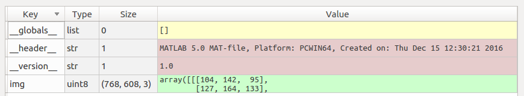

Python读写mat文件
mat格式是matlab的数据存储格式，按照矩阵保存，与numpy数据格式兼容，适合于各种数学运算。
python可调用scipy库进行mat格式的数据读写。12345import scipy.io as sciodataFile = 'A.mat'data = scio.loadmat(dataFile)datanew = 'B.mat'scio.savemat(datanew,{'img':data['img']})
读取mat后，data为dict格式，主要另外添加了一些附加头信息，如下图。

若要处理其中的img，按照data[‘img’]取出即可。